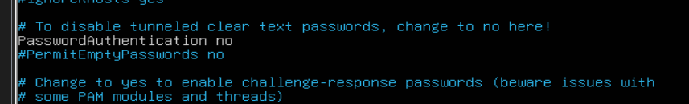
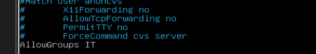
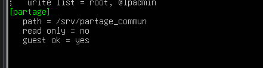
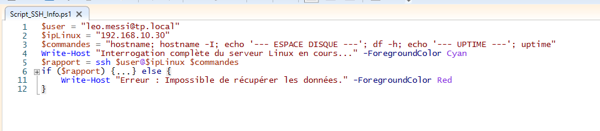
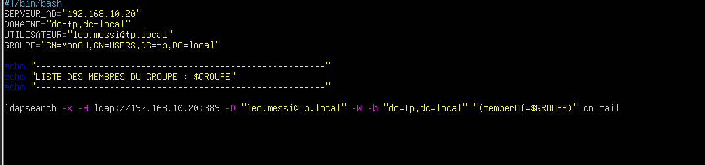

Intégrer un serveur Linux à Active Directory, puis le sécuriser
Sur quatre jours, j'ai joint un serveur Linux au domaine tp.local, limité l'accès SSH à un groupe, corrigé un partage Samba ouvert à tout le monde, et mis en place un audit à distance depuis Windows. Le point clé : intégrer un serveur à l'annuaire ne suffit pas, il faut ensuite réduire ce que chacun peut faire.
01Le contexte
Dans une entreprise, les comptes utilisateurs sont gérés de façon centralisée dans Active Directory. Plutôt que de créer des comptes locaux sur chaque serveur Linux, on veut que les salariés s'y connectent avec leur compte du domaine, et que les droits suivent leur groupe (par exemple, le groupe IT).
Le lab : un contrôleur de domaine Windows Server (192.168.10.20) et un serveur Linux (192.168.10.30), sur le même réseau.
02Joindre le serveur Linux au domaine
Avec realm, le serveur rejoint le domaine et configure SSSD, le service qui interroge Active Directory pour authentifier les utilisateurs (via Kerberos). La commande realm list permet de vérifier le résultat :

tp.local (configured: kerberos-member), et les comptes se connectent au format utilisateur@tp.local.À retenir : la ligne login-policy: allow-realm-logins signifie que tous les comptes du domaine peuvent se connecter. C'est pratique pour tester, mais trop large pour la production : c'est l'objet des étapes suivantes.
03Restreindre l'accès SSH
Deux réglages dans /etc/ssh/sshd_config :

PasswordAuthentication no : plus de connexion par simple mot de passe.
AllowGroups IT : seul le groupe IT peut se connecter en SSH.04Lire les logs pour vérifier
Pour voir ce que fait réellement le serveur, j'ai filtré les messages de SSSD dans le journal d'authentification :

sudo grep "pam_sss" /var/log/auth.log | tail -n 10 : on y voit les tentatives refusées, l'utilisateur et l'adresse IP d'origine.Les messages authentication failure et User not known to the underlying authentication module indiquent que la connexion a été refusée, avec l'IP et le compte concernés. C'est exactement ce qu'un analyste SOC surveille : des échecs répétés depuis une même IP peuvent signaler une attaque par force brute.
05Le partage Samba : avant / après
C'est la partie la plus parlante du TP. Le premier partage créé était ouvert à tout le monde :

read only = no) et accès invité (guest ok = yes) : n'importe qui sur le réseau peut lire, modifier ou déposer des fichiers.
valid users = @IT).Un partage ouvert aux invités en écriture est une porte d'entrée classique : fuite de données, dépôt de fichiers malveillants, ou rançongiciel qui chiffre tout le dossier. La règle appliquée ici est le moindre privilège : seules les personnes qui en ont besoin y accèdent, avec le minimum de droits.
06Auditer et automatiser
Pour ne pas se connecter à la main à chaque fois, j'ai écrit deux petits scripts :


ldapsearch liste les membres d'un groupe Active Directory. Le mot de passe est demandé à l'exécution (-W) au lieu d'être écrit dans le script.J'ai aussi planifié une tâche cron toutes les 5 minutes pour enregistrer l'espace disque dans un fichier de log.
07Ce que j'améliorerais aujourd'hui
| Constat | Amélioration |
|---|---|
allow-realm-logins : tout le domaine peut se connecter | Limiter avec realm permit -g IT, en plus de AllowGroups |
| Requêtes LDAP en clair (port 389) | Passer en LDAPS (port 636) pour chiffrer les échanges avec l'annuaire |
| Logs consultés à la main | Ajouter fail2ban, ou envoyer les logs vers un outil centralisé (SIEM) |
Logs de supervision dans /tmp | Les écrire dans /var/log, avec une rotation (logrotate) |
08Ce que j'en retiens
- Joindre un serveur à Active Directory, c'est facile. Le vrai travail, c'est de restreindre ensuite.
- Une seule ligne de configuration (
guest ok = yes) peut exposer tout un dossier. - Toujours vérifier dans les logs que la configuration fait bien ce qu'on croit.
- Automatiser l'audit permet de contrôler plusieurs serveurs sans erreur de manipulation.